PS2 Programming Log

My working log for learning programming for the Playstation 2. The goal is to have an abstraction/library layer that will be cross platform for the Playstation 1 as well, to leverage my existing psyq_lib stuff, hence the repository name is 'GameLib' currently
The source code is currently here: https://bitbucket.org/williamblair/gamelib
08/22/2020
The ps2sdk is set up, and have a basic Render/Model/Mesh setup. It was easier to set up a virtual machine with Linux to install the SDK, which you can then install via a single script from here: https://github.com/ps2dev/ps2dev. (I really should just re-install Linux on my machine to dual boot!) The code is adapted from the teapot example included with the ps2sdk.
The main loop is currently quite simple:
/*
* GameLib test program
*/
#include "PS2Includes.h"
#include "PS2Renderer.h"
#include "PS2Model.h"
#include "mesh_data.c"
int main(int argc, char **argv)
{
PS2Renderer Renderer;
MeshData TeapotMeshData;
PS2Model TeapotModel;
Renderer.Init();
TeapotMeshData.Normals = normals;
TeapotMeshData.Colors = colours;
TeapotMeshData.Vertices = vertices;
TeapotMeshData.Indices = points;
TeapotMeshData.VertexCount = vertex_count;
TeapotMeshData.IndexCount = points_count;
TeapotModel.SetMeshData( TeapotMeshData );
for (;;)
{
TeapotModel.Rotate( 0.0f, 0.01f, 0.0f );
Renderer.DrawModel( TeapotModel );
Renderer.Update();
}
// Sleep
SleepThread();
// End program.
return 0;
}
Which is shown running in pcsx2 and on a PS2 Slim:
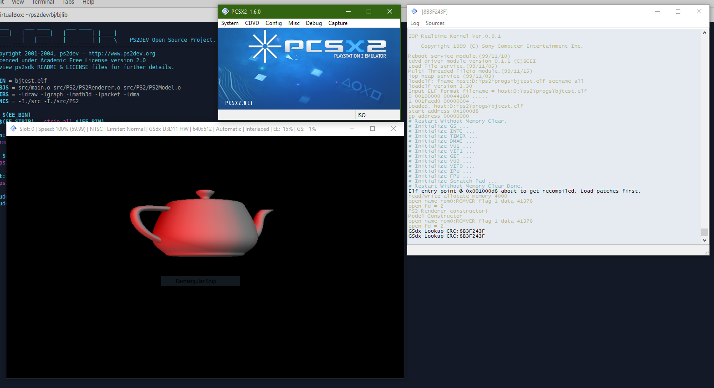 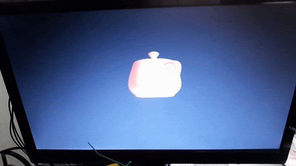
The PS2 is running the ELF file over ethernet via ps2link and ps2client. ps2link is running on the PS2 off of the memory card (thanks to Free McBoot), which in turn is started via uLaunchElf. The IP configuration in order to find the PS2 over TCP from your computer is set in the file IPCONFIG.DAT
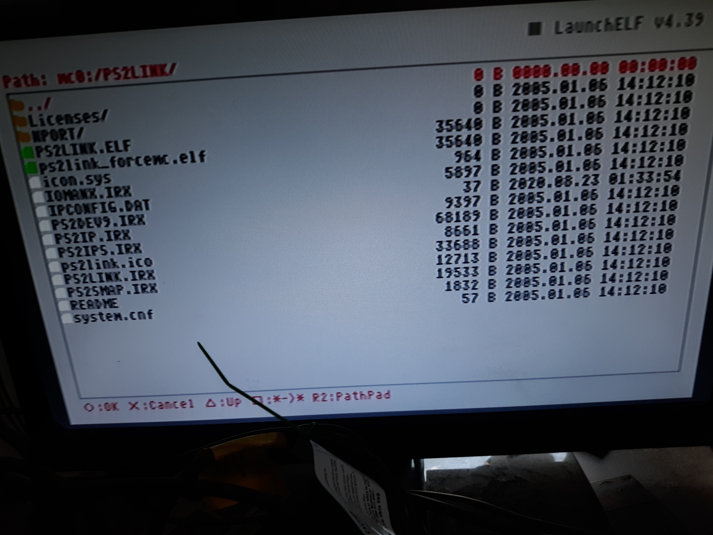 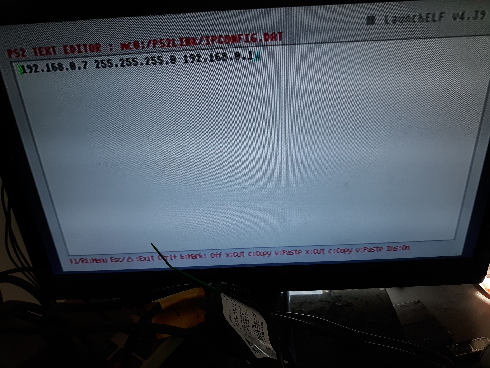On the pc side, ps2client runs by specifying the PS2's IP address, then specifying to run your ELF file on the Emotion Engine (the PS2 main CPU) via execee
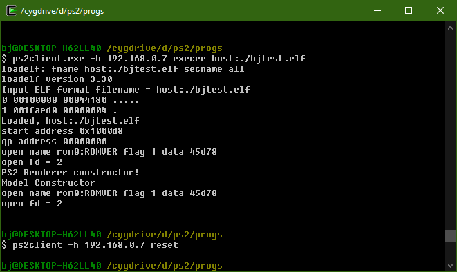Current TODOs include lighting, camera, and controller management. The lighting and camera are currently hard coded in the renderer.
The following links were helpful for getting started:
- http://lukasz.dk/playstation-2-programming/an-introduction-to-ps2dev/
- https://www.ps2-home.com/forum/viewtopic.php?f=103&t=9616
- https://www.ps2-home.com/forum/viewtopic.php?f=103&t=337
08/23/2020
Added Camera and Controller classes (for the gamepad), as well as a simple floor mesh/model. The gamepad code I copied from another PS2 C++ class I had made when I was experimenting with PS2SDK years ago: https://github.com/williamblair/PS2Pad. Additionally, the Camera class I adapted from my learnopengl code for FPS camera movement: https://github.com/williamblair/learnopengl/tree/master/07_fps_camera. It felt good to see the fruits of previous labor ripen into use!
The camera movement/rotation calculation isn't optimized and probably could be using VU0 vector math; currently each x/y/z camera point is calculated individually.
Interestingly, moving around the world you can see the geometry freak out in places; I think this is because I need to manually do clipping and back face culling, which I read in Glampert's PS2 page: https://glampert.com/2015/03-23/ps2-homebrew-hardware-and-ps2dev-sdk/
The resulting main code is a little longer now but still not totally complicated:
/*
* GameLib test program
*/
#include "PS2Includes.h"
#include "PS2Renderer.h"
#include "PS2Model.h"
#include "PS2Camera.h"
#include "PS2Controller.h"
#include "mesh_data.c"
... // Floor class impl is here
static void RotateCamera( Controller& Pad, Camera& Cam )
{
int RightStickX = Pad.GetRightJoyX();
int RightStickY = Pad.GetRightJoyY();
const float Scale = 0.0001f;
if (RightStickX > 150 || RightStickX < 100)
{
RightStickX -= 127; // scale from 0..255 to -128, 127
Cam.Rotate( 0.0f, -Scale * (float)RightStickX, 0.0f );
}
if (RightStickY > 150 || RightStickY < 100)
{
RightStickY -= 127;
Cam.Rotate( -Scale * (float)RightStickY, 0.0f, 0.0f );
}
}
static void TranslateCamera( Controller& Pad, Camera& Cam )
{
int LeftStickX = Pad.GetLeftJoyX();
int LeftStickY = Pad.GetLeftJoyY();
const float Scale = 0.01f;
if (LeftStickX > 150 || LeftStickX < 100)
{
LeftStickX -= 127; // scale from 0..255 to -128, 127
Cam.Translate( Scale * (float)LeftStickX, 0.0, 0.0f );
}
if (LeftStickY > 150 || LeftStickY < 100)
{
LeftStickY -= 127;
// negative is forwards
Cam.Translate( 0.0f, 0.0f, Scale * (float)LeftStickY );
}
}
int main(int argc, char **argv)
{
PS2Renderer Render;
PS2Camera Cam;
MeshData TeapotMeshData;
PS2Model TeapotModel;
PS2Floor Floor;
PS2Controller Pad;
SifInitRpc(0);
Render.Init();
Render.AttachCamera( Cam );
TeapotMeshData.Normals = normals;
TeapotMeshData.Colors = colours;
TeapotMeshData.Vertices = vertices;
TeapotMeshData.Indices = points;
TeapotMeshData.VertexCount = vertex_count;
TeapotMeshData.IndexCount = points_count;
TeapotModel.SetMeshData( TeapotMeshData );
Floor.Init();
Pad.Init(0);
for (;;)
{
Pad.Update();
RotateCamera( Pad, Cam );
TranslateCamera( Pad, Cam );
TeapotModel.Rotate( 0.0f, 0.01f, 0.0f );
Render.DrawModel( TeapotModel );
//Floor.Rotate( 0.01f, 0.0f, 0.0f );
Render.DrawModel( Floor );
Render.Update();
}
// Sleep
SleepThread();
// End program.
return 0;
}
Here's the result in PCSX2 and via PS2Client:
 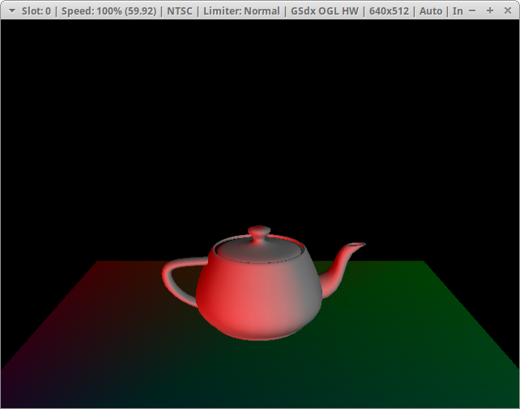
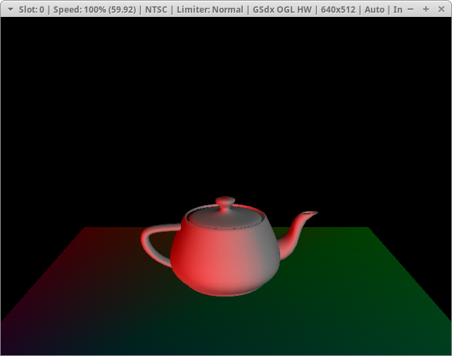
08/24/2020
Added a Light class. The renderer could use some more work - currently the lights are fixed/unchangeable at runtime. When the light is attached to the renderer, its data is copied into the internal renderer data array. Removing lights would require moving data within the renderer array. Additionaly, the renderer should use its own index for adding to the array instead of relying on the light's auto-assigned number to use as an index, otherwise the first array enter may not be filled but instead could start with an offset, which would break lighting calculation.
The main code is still straightforward, at least:
/*
* GameLib test program
*/
#include "PS2Includes.h"
#include "PS2Renderer.h"
#include "PS2Model.h"
#include "PS2Camera.h"
#include "PS2Controller.h"
#include "mesh_data.c"
...
int main(int argc, char **argv)
{
PS2Renderer Render;
PS2Camera Cam;
MeshData TeapotMeshData;
PS2Model TeapotModel;
PS2Floor Floor;
PS2Controller Pad;
PS2Light Lights[4];
Lights[0].SetDirection( 0.00f, 0.00f, 0.00f );
Lights[1].SetDirection( 1.00f, 0.00f, -1.00f );
Lights[2].SetDirection( 0.00f, 1.00f, -1.00f );
Lights[3].SetDirection( -1.00f, -1.00f, -1.00f );
Lights[0].SetColor( 0.00f, 0.00f, 0.00f );
Lights[1].SetColor( 1.00f, 0.00f, 0.00f );
Lights[2].SetColor( 0.30f, 0.30f, 0.30f );
Lights[3].SetColor( 0.50f, 0.50f, 0.50f );
Lights[0].SetType( Light::AMBIENT );
Lights[1].SetType( Light::DIRECTIONAL );
Lights[2].SetType( Light::DIRECTIONAL );
Lights[3].SetType( Light::DIRECTIONAL );
SifInitRpc(0);
Render.Init();
Render.AttachCamera( Cam );
Render.AttachLight( Lights[0] );
Render.AttachLight( Lights[1] );
Render.AttachLight( Lights[2] );
Render.AttachLight( Lights[3] );
TeapotMeshData.Normals = normals;
TeapotMeshData.Colors = colours;
TeapotMeshData.Vertices = vertices;
TeapotMeshData.Indices = points;
TeapotMeshData.VertexCount = vertex_count;
TeapotMeshData.IndexCount = points_count;
TeapotModel.SetMeshData( TeapotMeshData );
Floor.Init();
Pad.Init(0);
for (;;)
{
Pad.Update();
RotateCamera( Pad, Cam );
TranslateCamera( Pad, Cam );
TeapotModel.Rotate( 0.0f, 0.01f, 0.0f );
Render.DrawModel( TeapotModel );
//Floor.Rotate( 0.01f, 0.0f, 0.0f );
Render.DrawModel( Floor );
Render.Update();
}
// Sleep
SleepThread();
// End program.
return 0;
}
11/11/2020
Investigating Glampert's PS2Dev programs (repo here: https://bitbucket.org/glampert/ps2dev-tests/src/master/) to see how they're implemented. Got the cubes application to compile after a few changes (presumably this was needed due to updates/more modern ps2sdk changes)
First, replaced fio* IO functions with c standard library ones (fioOpen() with open(), fioLseek with lseek(), etc.)
Second, removed the virtual CameraBase deconstructor and deconstructor from the thirdperson camera classes, due to the following error: Undefined reference to '__cxa_pure_virtual' with regards to the third person camera deconstructor
Third, removed `-lmf` from the compiler flags as mf wasn't found
After building, the result running in pcsx2 was having controller issues:
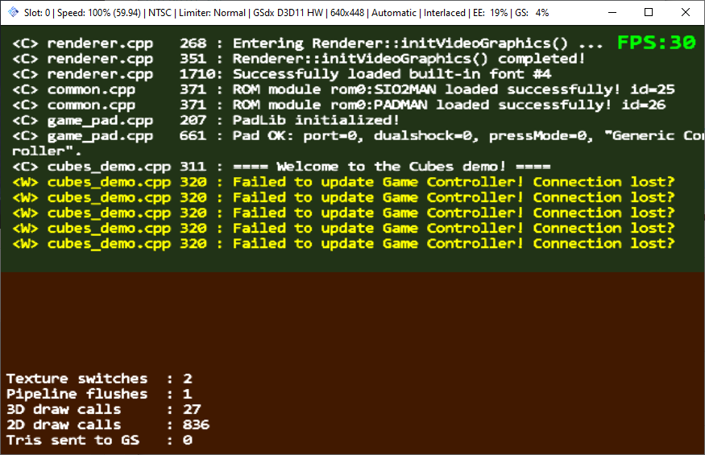So I replaced the game controller pad implementation with my own I had created a while back: https://github.com/williamblair/PS2Pad
Success! The result:
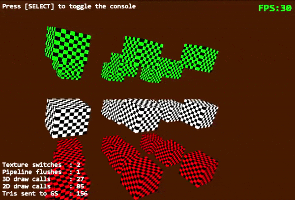My forked version of Glampert's repo is here: https://bitbucket.org/williamblair/ps2dev-tests/src/master/
11/15/2020
Finished the main setup/system initialization re-writing of Glampert's cube demo. This only required part of the Renderer class to be implemented along with the RenderPacket class.
I had an issue where would never pass 'draw_wait_finish()', however after removing some printf statements it worked. I assume then that the PS2/library are sensitive to timing with regards to hardware status, which I guess makes sense:
dma_wait_fast();
dma_channel_send_chain(DMA_CHANNEL_GIF, currentFramePacket->GetQwordPtr(), currentFramePacket->GetDisplacement(currentFrameQwPtr), 0, 0);
// V-Sync wait
graph_wait_vsync();
draw_wait_finish();
The above worked, while below did not:
printf("end frame dma wait fast\n");
dma_wait_fast();
printf("end frame dma wait channel send chain\n");
dma_channel_send_chain(DMA_CHANNEL_GIF, currentFramePacket->GetQwordPtr(), currentFramePacket->GetDisplacement(currentFrameQwPtr), 0, 0);
// V-Sync wait
printf("end frame wait vsync\n");
graph_wait_vsync();
printf("end frame draw wait finish\n");
draw_wait_finish();
The result isnt very exciting yet, just a brown screen:
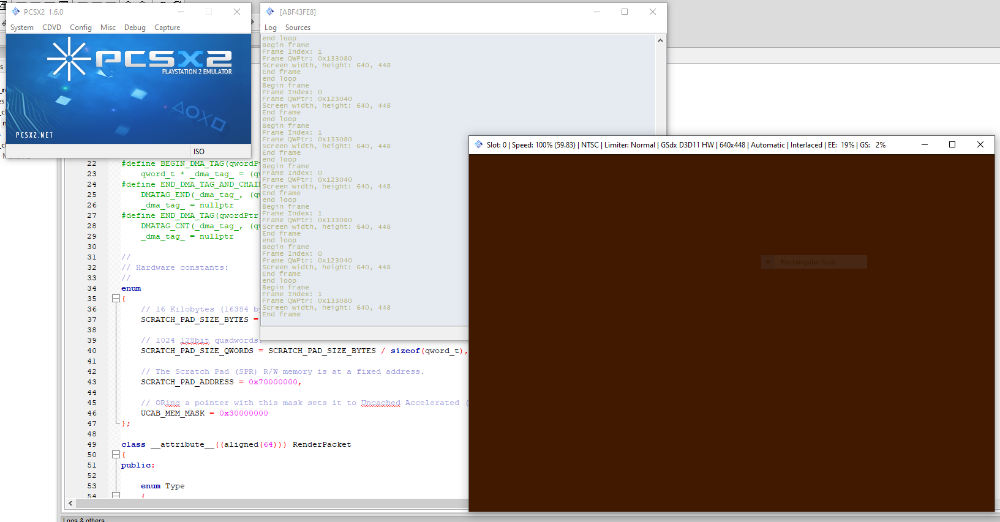The code can be found here: link
11/21/2020
Got a triangle drawn, continuing the glampert code re-implementation. This required addition of basic geometry renderering and the vector/matrix library. Originally I was stuck on thinking there was an error and the triangle wasn't getting drawn; however, it turned out to be that the triangle needed to be rotated 180 degrees about the Y axis due to the original code's camera placement. Without this rotation the triangle was back-facing and thus culled. My current re-write does not cull any triangles, so you can see when it spins you can see both sides
The code to render the triangle looks like this:
renderer.SetViewProjMatrix(gViewMatrix * gProjectionMatrix);
PS2Matrix trans, rotX, rotY;
trans.makeTranslation(0.0f, 0.0f, -3.0f);
rotX.makeRotationX(deg2rad(0.0f));
rotY.makeRotationY(deg2rad(triRotation));
triRotation += 1.0f;
if ( triRotation >= 360.0f )
{
triRotation -= 360.0f;
}
renderer.SetModelMatrix(rotX * rotY * trans);
renderer.DrawIndexedTriangles(triIndi, 3, triVertices, 3);
11/22/2020
A group of cubes is now drawn instead of a single triangle. The cube data is stored in a Cube object (the vertices, texture coords, colors, and faces/indices). Each cube is drawn 3 times in a different location:
Cube gRedCube;
Cube gWhiteCube;
Cube gGreenCube;
float gCubeRotation = 0.0f;
static inline void DrawCubeGroup(const Cube & cube, const float y)
{
for (u32 z = 0; z < 3; ++z)
{
for (u32 x = 0; x < 3; ++x)
{
PS2Matrix trans, rotX, rotY;
trans.makeTranslation((x * 5.0f) - 5.0f, y, (z * -5.0f) - 20.0f);
rotX.makeRotationX(deg2rad(gCubeRotation));
rotY.makeRotationY(deg2rad(gCubeRotation));
renderer.SetModelMatrix(rotX * rotY * trans);
renderer.DrawIndexedTriangles(cube.indexes, Cube::INDEX_COUNT, cube.vertexes, Cube::VERT_COUNT);
}
}
}
Which looks like:
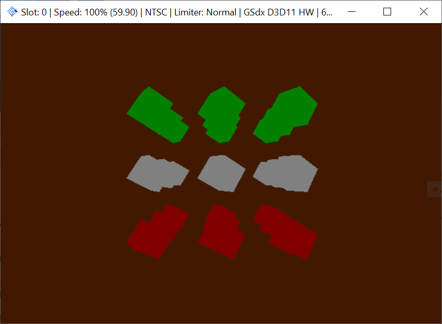